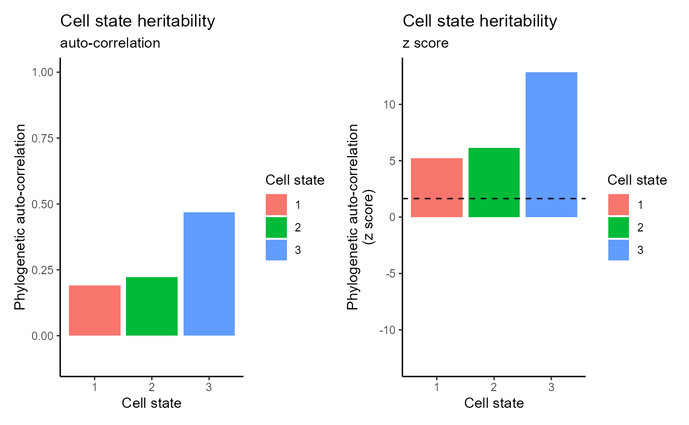

Mouse_embryo
2025-04-02
Mouse_embroy.RmdLoading package functions
library(LineageCast)
library(PATH)
library(Seurat)
library(ggplot2)
library(phangorn)
library(ggtreeExtra)
library(ggtree)
library(TreeTools)
library(ape)
library(readxl)
library(devtools)
library(tidytree)
library(DCLEAR)Input(scRNA-seq data & lineage barcodes)
# Load filtered mouse embryo scRNA-seq data
# Uncomment the following line if using the unfiltered data
load("data/mouse_embryo/mouse_embroy_filtered.RData")
# Extract count data from the Seurat object
counts <- GetAssayData(object = mouse_embroy_filtered, slot = "counts")
ngenes <- nrow(counts)
ncells <- ncol(counts)
# Load filtered lineage barcode data
load("data/mouse_embryo/barcode_filtered.RData")
N_char <- ncol(barcode_filtered)
# Standardize cell IDs for both counts and barcode data
colnames(counts) <- rownames(barcode_filtered) <- paste("cell", 1:ncells, sep = "_")Visualision
# Extract UMAP embeddings from the Seurat object
umap_res <- Embeddings(mouse_embroy_filtered, reduction = "umap")
umap_df <- data.frame(UMAP1 = umap_res[, 1], UMAP2 = umap_res[, 2])
# Create a UMAP plot colored by cell states
p <- ggplot(umap_df) +
geom_point(aes(x = UMAP1, y = UMAP2, color = mouse_embroy_filtered$cell_states)) +
scale_color_brewer(palette = "Set1") +
labs(color = "Cluster ID") +
xlab("UMAP 1") +
ylab("UMAP 2") +
theme(axis.text = element_text(size = 15),
axis.title = element_text(size = 20),
legend.title = element_text(size = 15),
legend.text = element_text(size = 15))
pConstruction of the cell state tree
# Assign cell IDs to the UMAP results
rownames(umap_res) <- paste("cell", 1:nrow(barcode_filtered), sep = "_")
# Extract cell state labels from the Seurat object
labels_new <- as.character(mouse_embroy_filtered$cell_states)
# Define state lineage paths
state_lineages <- list()
state_lineages[[1]] <- c("Ectoderm", "Endoderm")
state_lineages[[2]] <- c("Ectoderm", "Mesoderm")
names(state_lineages) <- paste0("L", 1:length(state_lineages))Barcode imputation and grouping cells by state lineage
# Perform barcode imputation to address stochastic dropout
barcodes <- dropout_imputation_alter(as.matrix(barcode_filtered), N_char, ncells, ceiling(N_char * 0.8))
# Create a data frame of cell IDs and their corresponding cell state labels
state <- data.frame(cell_id = paste("cell", 1:ncells, sep = "_"),
cluster = labels_new)
# Generate state lineage information
sl_info <- state_lineage_info(state_lineages, ncells, state, barcodes)
state_lineage <- sl_info[[1]]
cell_lineages <- sl_info[[2]]
barcodes_lineages <- sl_info[[3]]
state_labels_lineages <- sl_info[[4]]Reconstruction of the sub cell division trees
# Construct initial sub-cell division trees based on state lineages and barcode data
Trees_initial <- initial_tree_construction(state_lineages, barcodes_lineages)
# Refine the initial subtrees using a maximum likelihood framework and subtree exchanges
refined_subtree <- subtree_refinement(Trees_initial, state_lineages, barcodes_lineages,N_char, state_labels_lineages,lambda1 = 0.1, lambda2 = 0.9,maxIter = 100, repeat_time = 10)
bestsubtree <- refined_subtree[[1]]Removing duplicated leaf nodes from the refined subtrees
bestsubtree <- drop_duplicated_tips(bestsubtree, barcodes_lineages, cell_lineages,state_lineage, alpha = 1.5, beta = 1.5)Decomposition and reassembly of sub-cell division trees
# Generate root barcodes for each subtree from the refined best sub-cell division trees
subtrees_rootbar <- get_subtree_root_barcodes(bestsubtree, state, barcodes, length(state_lineages))
# Compute the common mutation matrix between the subtrees' root barcodes
CM <- common_mutation_matrix(subtrees_rootbar)
# Compute ranking and weight matrices based on mutation patterns
Nodes_rank <- subtrees_rank(CM)[[1]]
Nodes_weight <- subtrees_rank(CM)[[2]]
# Decompose refined subtrees into sub-subtrees for further merging
subsubtrees <- decompose_subtrees(bestsubtree, state, barcodes, length(state_lineages))
# Merge the sub-cell division trees using Ward's method
Tree_Merge <- merge_subcell_trees_ward(subtrees_rootbar, subsubtrees)plot tree backbone
# Combine root barcodes from subtrees into a single matrix
barcodes_lineage <- do.call(rbind, subtrees_rootbar)
rownames(barcodes_lineage) <- names(subtrees_rootbar)
# Compute a Hamming distance matrix between lineage barcodes
D <- hamming_distance(barcodes_lineage)
# Cluster nodes based on the Hamming distance to generate a backbone tree
tree_backbone <- nodes_clustering(D)
# Select a node from the backbone tree for further analysis
node_name <- "3_2_node_6415"
# Find the position of the selected node in the backbone tree
a_positions <- sapply(node_name, function(node) which(tree_backbone$tip.label == node))
# Plot the backbone tree with tip labels; highlight the selected node
plot(tree_backbone, show.tip.label = FALSE, cex = 0.6)
# Extract a subtree corresponding to the selected node
subtree <- subsubtrees[[node_name]]
barcodes_subtree <- barcodes[match(subtree$tip.label, rownames(barcodes)), ]
phylogenetic_subtree <- phylogenetic_tree(subtree, N_char, barcodes_subtree, ncells = NULL, Nnodes = NULL, edges = NULL)##
## Setting initial dates...
## Fitting in progress... get a first set of estimates
## (Penalised) log-lik = -82895477751
## Optimising rates... dates... -82895477751
## Optimising rates... dates... -53321305
## Optimising rates... dates... -4191001
## Optimising rates... dates... -157623.6
## Optimising rates... dates... -31975.97
## Optimising rates... dates... -19526.78
## Optimising rates... dates... -8372.402
## Optimising rates... dates... -2716.95
## Optimising rates... dates... -2579.895
## Optimising rates... dates... -2498.399
## Optimising rates... dates... -2448.564
## Optimising rates... dates... -2412.931
## Optimising rates... dates... -2381.64
## Optimising rates... dates... -2354.631
## Optimising rates... dates... -2321.118
## Optimising rates... dates... -2300.946
## Optimising rates... dates... -2292.192
## Optimising rates... dates... -2285.401
## Optimising rates... dates... -2278.805
## Optimising rates... dates... -2273.387##
## log-Lik = -2205.005
## PHIIC = 9771.56Inference of the plasticity and heritability of cell states.
# Use the merged tree from previous steps for downstream analysis
tree <- Tree_Merge
# Map cell state labels to the tree tips
tree$states_chr <- labels_new[match(tree$tip.label, state$cell_id)]
tree$states <- as.numeric(factor(labels_new[match(tree$tip.label, state$cell_id)]))
tree$states[is.na(tree$states)] <- max(tree$states, na.rm = TRUE)
# Create a tidy tree data frame for plotting using ggtree
tree_tidy <- full_join(subtree, tibble(label = tree$tip.label, state = as.factor(tree$states_chr)), by = "label")
tree_tidy@phylo$edge.length <- phylogenetic_subtree$edge.length
# Plot the phylogenetic tree with a circular layout and an associated tile plot of cell states
p <- ggtree(tree_tidy, layout = "circular", size = 0.1) +
geom_fruit(
geom = geom_tile,
mapping = aes(fill = state),
offset = 0.02,
width = 0.02,
color = NA
) +
scale_fill_brewer(palette = "Set1", type = "qual") +
labs(fill = "Cell state") +
theme(
legend.position = "right",
legend.title = element_text(size = 10),
legend.text = element_text(size = 8),
plot.title = element_text(hjust = 0.5, face = "bold")
)
p
# Compute phylogenetic distances and auto-correlation metrics
W <- one_node_tree_dist(tree)
X <- catMat(tree$states)
treexcor <- xcor(X, W)
tree_phy_cor <- treexcor$phy_cor
Idf <- reshape2::melt(tree_phy_cor, value.name = "I")
Zdf <- reshape2::melt(treexcor$Z.score, value.name = "Z")
df <- full_join(Idf, Zdf, by = c("Var1", "Var2"))
df <- df %>% mutate(Var1 = as.factor(Var1), Var2 = as.factor(Var2))
# Phylogenetic auto-correlation (heritability) bar plots
herit1 <- df %>%
filter(Var1 == Var2) %>%
ggplot(aes(x = Var1, y = I, fill = Var1)) +
geom_bar(stat = "identity") +
ylim(c(-0.1, 1)) +
theme_classic() +
labs(fill = "Cell state", y = "Phylogenetic auto-correlation", x = "Cell state") +
ggtitle("Cell state heritability", subtitle = "auto-correlation")
maxz <- max(abs(df$Z))
herit2 <- df %>%
filter(Var1 == Var2) %>%
ggplot(aes(x = Var1, y = Z, fill = Var1)) +
geom_bar(stat = "identity") +
ylim(c(-maxz, maxz)) +
theme_classic() +
labs(fill = "Cell state", y = "Phylogenetic auto-correlation\n(z score)", x = "Cell state") +
geom_hline(yintercept = qnorm(0.05, lower.tail = FALSE), col = "black", lty = 2) +
ggtitle("Cell state heritability", subtitle = "z score")
# Display the heritability plots side by side
herit1 + herit2
# Plot a heatmap of the phylogenetic correlation between cell states
df %>%
ggplot(aes(x = Var1, y = Var2, fill = I)) +
geom_tile(col = "white") +
scale_fill_distiller(palette = 5, type = "div", limits = c(-1, 1)) +
theme_classic() +
scale_y_discrete(limits = rev) +
labs(fill = "Phylogenetic\ncorrelation", x = "Cell state", y = "Cell state") +
theme(aspect.ratio = 1)